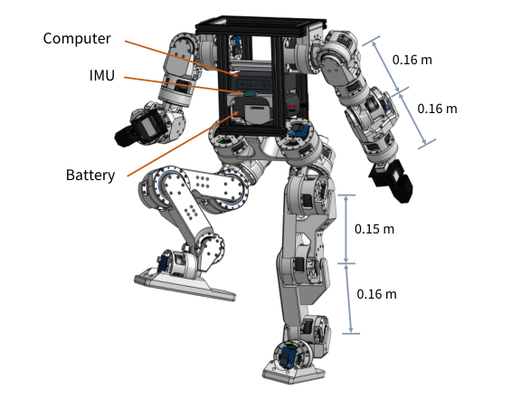
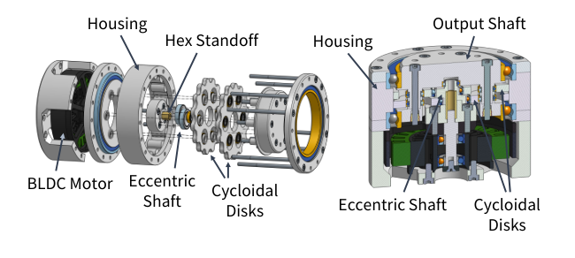
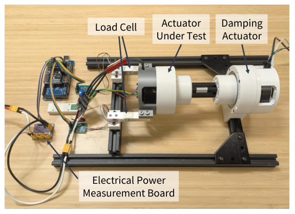
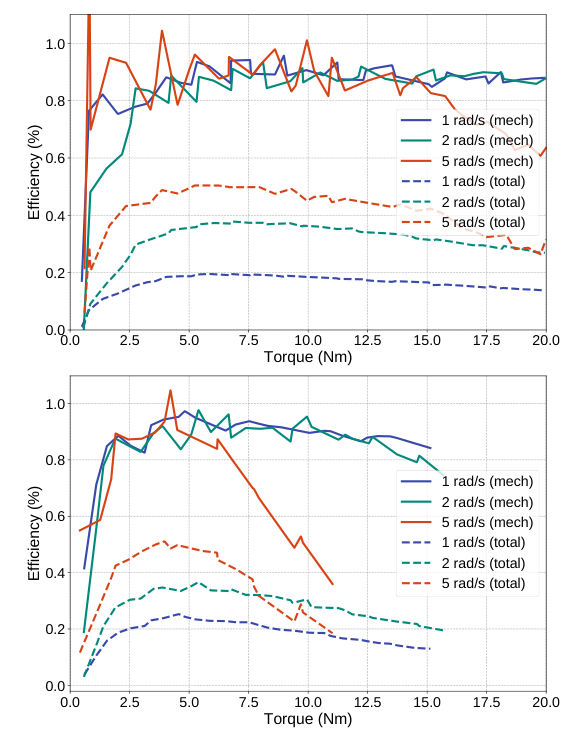
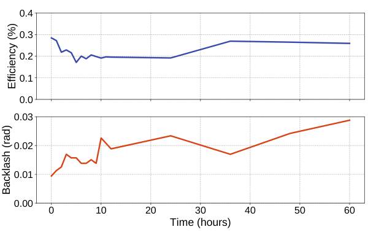
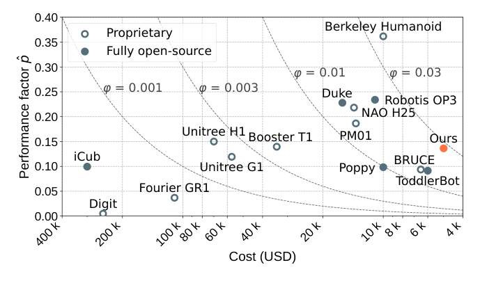
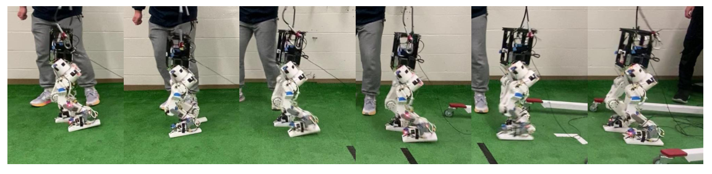

Background & Motivation
Berkeley Humanoid Lite 是一台 16 kg、0.8 m 高、22 個主動關節的開源中型人形機器人。它的核心是用桌上型 FDM 印表機以 PLA 列印的擺線(cycloidal)減速器,配上現成的無人機 BLDC 馬達與便宜驅動板,做成兩種模組化關節致動器;所有零件都能在 Amazon / 淘寶 / Digikey 買到,整機 BOM 美國 4,312 美元、中國 3,236 美元。作者用自製測功機(dynamometer)量效率、剛性、背隙與 60 小時耐久,並展示零樣本 sim-to-real 的 RL 行走與 VR 雙臂遙操作。
Berkeley Humanoid Lite is an open-source, mid-scale humanoid: 16 kg, 0.8 m tall, 22 actuated joints. Its core is a cycloidal gearbox printed in PLA on a desktop FDM printer, paired with off-the-shelf drone BLDC motors and a cheap driver board to form two sizes of modular joint actuator. Every part can be bought on Amazon / Taobao / Digikey, giving a full-robot BOM of $4,312 (US) or $3,236 (China). The authors characterize efficiency, stiffness, backlash and a 60-hour durability run on a custom dynamometer, and demonstrate zero-shot sim-to-real RL walking and VR bimanual teleoperation.

如果只有 30 秒In 30 seconds
- 問題 — 人形機器人硬體不是貴又閉源(Digit、GR1、Unitree),就是要 CNC / 雷射切割的實驗室原型;便宜的開源方案(Poppy、OP3)用伺服馬達,不可反驅、反射慣量大,難以放大到中型尺寸。
- Problem — Humanoid hardware is either expensive and closed (Digit, GR1, Unitree) or a lab prototype needing CNC / laser cutting; cheap open-source options (Poppy, OP3) use hobby servos that are not backdrivable and have high reflected inertia, so they do not scale to mid-size robots.
- 方法 — PLA 列印的擺線減速器(負載分散在多個齒、對印表機解析度較寬容)+ 無人機 BLDC + B-G431B-ESC1 驅動板 + AS5600 編碼器,做成 6512 / 5010 兩種模組;CAN 匯流排串接,PPO 訓練的行走策略在機上 25 Hz 執行。
- Method — A PLA-printed cycloidal reducer (load shared over many lobes, tolerant of printer resolution) + a drone BLDC + a B-G431B-ESC1 driver + an AS5600 encoder, packaged as two modules (6512 / 5010), daisy-chained on CAN; a PPO-trained walking policy runs onboard at 25 Hz.
- 結果 — 齒輪箱機械效率約 90%、剛性 319.49 Nm/rad、新品背隙最大 0.0229 rad;60 小時耐久後背隙上升但仍可用;6 顆、2 台印表機間一致(力矩誤差 ±0.5 Nm);整機 < 5,000 美元並能零樣本 sim-to-real 行走、遙操作寫字和轉魔術方塊。
- Results — Gearbox mechanical efficiency ~90%, stiffness 319.49 Nm/rad, fresh-unit backlash at most 0.0229 rad; after 60 hours backlash grows but stays usable; six units from two printers agree (torque error within ±0.5 Nm); the whole robot costs under $5,000 and achieves zero-shot sim-to-real walking and teleoperated writing and Rubik's-cube solving.
領域脈絡Field context
足式機器人近十年的硬體主流是 proprioceptive / 準直驅(QDD)致動器:大扭矩密度的外轉子 BLDC + 低減速比(多為行星齒輪或皮帶),讓關節可反驅、能靠電流估力矩,MIT Cheetah 系列(Katz 的低成本模組化致動器)、Stanford Doggo(3:1 皮帶)都屬此路線。好處是動態性能高,代價是金屬加工件、客製馬達或驅動板,一般實驗室難以複製。
For a decade, legged-robot hardware has been dominated by proprioceptive / quasi-direct-drive (QDD) actuators: high-torque-density outrunner BLDCs with low reduction (usually planetary gears or belts), making joints backdrivable and torque estimable from current—the MIT Cheetah line (Katz's low-cost modular actuator) and Stanford Doggo (3:1 belt) are examples. The payoff is dynamic performance; the cost is machined metal parts and custom motors or drivers that most labs cannot replicate.
另一條路是 3D 列印:Urs et al. (2022) 做了列印行星減速器(但要樹脂印表機),Roozing & Roozing (2022, 2024) 研究了可用 FDM 列印的擺線減速器(含非 pinwheel 設計)。這些多停留在「單一致動器」層級。本文把擺線列印路線推到一整台人形機器人,並配齊 BOM、韌體、訓練與部署框架。
The other path is 3D printing: Urs et al. (2022) built a printed planetary actuator (but needing a resin printer), and Roozing & Roozing (2022, 2024) studied FDM-printable cycloidal reducers (including a non-pinwheel design). These mostly stayed at the single-actuator level. This paper scales the printed-cycloidal route to a full humanoid, with BOM, firmware, and training/deployment frameworks.
這是一篇平台 / 系統論文,不是「新演算法」論文:它的貢獻主張是「夠用的性能 × 極低門檻 × 完全開源」。讀的重點因此不是「有沒有比別人強」,而是「它省掉了什麼、為此付出多少性能、證據能不能撐住『可靠』這個字」。[導讀補充] 標題以「Demonstrating」開頭,屬 RSS 的系統展示型論文格式。
This is a platform / systems paper, not a new-algorithm paper: its claim is "good-enough performance × very low barrier × fully open-source." So read it not for "does it beat others" but for "what did it remove, how much performance did that cost, and does the evidence support the word reliable." [guide note] The "Demonstrating" title prefix marks RSS's system-demonstration paper format.
核心洞見 · KEY INSIGHTSKEY INSIGHTS
這篇值得帶走的不是某個數字,而是底下這幾個硬體設計觀念:
What's worth taking away is not a single number but these hardware-design ideas:
- 減速器的「形式」要配合製程。 塑膠強度低、FDM 解析度有限,作者選擇多齒同時嚙合、齒形圓滑的擺線減速器,而不是金屬世界的預設選項(行星齒輪)。選對拓撲,便宜材料也能用。
- Match the gearbox topology to the process. Plastic is weak and FDM resolution is limited, so the authors pick a cycloidal reducer with many lobes in mesh and smooth profiles instead of the metal-world default (planetary). With the right topology, cheap material becomes viable.
- 把錢花在馬達,把齒輪箱變成「幾乎免費」。 6512 致動器中列印件只要 4 美元,馬達卻佔 129 美元。[導讀補充] 整機 22 顆馬達合計 2,298 美元,約佔美國 BOM 的 53%。
- Spend on motors; make the gearbox nearly free. In the 6512 actuator the printed parts cost $4 while the motor costs $129. [guide note] The 22 motors total $2,298, about 53% of the US BOM.
- 「可靠」要用測功機數據說話。 效率圖、剛性遲滯曲線、60 小時耐久、跨印表機一致性、Moteus 交叉驗證——這套致動器特性測試流程本身就值得複製。
- "Reliable" must be backed by dyno data. Efficiency maps, a stiffness hysteresis curve, a 60-hour durability run, cross-printer consistency, Moteus cross-validation—this actuator characterization protocol is itself worth copying.
- 模組化 = 一個關節一顆自帶減速器的致動器 + 一條 CAN。 只要電源與 CAN(每條匯流排最多 64 個裝置),就能重排成四足、雙足、半人馬、移動底盤或成人尺寸人形。
- Modularity = one self-contained geared actuator per joint + one CAN bus. Needing only power and CAN (up to 64 devices per bus), it can be rearranged into a quadruped, biped, centaur, mobile base, or adult-size humanoid.
- 性能天花板是真實的。 剛性只有 PA-CF 版本的約 1/4.6,背隙隨磨耗增加、熱效應未研究;平台定位是「研究驗證 / 教學」,不是高動態運動的替代品。
- The performance ceiling is real. Stiffness is about 1/4.6 of a PA-CF version, backlash grows with wear, and thermal effects are unstudied; the platform is for "research validation / teaching," not a replacement for high-dynamic locomotion hardware.
Problem Diagnosis
現況 vs 痛點:三類人形平台Status quo vs pain points: three kinds of humanoid platforms
| 類別Category | 代表Examples | 痛點Pain point |
|---|---|---|
| 商用閉源Commercial, closed | Digit, Fourier GR1, THEMIS, OpenLoong, NAO H25; Unitree H1 / G1 | 價格高;較便宜的 Unitree 也閉源、難改、難修。High price; even the cheaper Unitree robots are closed, hard to modify and hard to repair. |
| 實驗室自製Lab-built research | Berkeley Humanoid, MIT Humanoid, Wukong, HRP-5P, LOLA | 性能好、適合 RL,但產量少、依賴 CNC / 雷射切割與昂貴元件,只在少數機構可得。High performance and RL-friendly, but built in tiny numbers with CNC / laser cutting and expensive parts, so only a few institutions have them. |
| 開源社群Open-source community | iCub; Poppy, OP3, NimbRo-OP2 | iCub 仍需 CNC;Poppy 等用 3D 列印 + 伺服馬達,但伺服不可反驅、反射慣量高、速度慢,難放大到中型。iCub still needs CNC; Poppy and similar use 3D printing + servos, but servos are not backdrivable, have high reflected inertia and are slow, so they do not scale up. |
作者把困難歸納成三個:(1) 致動——高性能致動器昂貴又私有;(2) 製造——CNC、雷射切割需要專門設施;(3) 耐久——3D 列印件剛性低、會磨耗,能否撐住長期運作是開放問題。
The authors name three difficulties: (1) actuation—high-performance actuators are expensive and proprietary; (2) fabrication—CNC and laser cutting need specialized facilities; (3) durability—3D-printed parts have low stiffness and wear over time, and whether they survive sustained operation is an open question.
Gap 表 — 開源致動器各缺什麼Gap table — what each open-source actuator lacks
| 前作Prior work | 限制Limitation | 本文怎麼補How this paper fills it |
|---|---|---|
| Katz (2018) MIT 低成本模組化致動器MIT low-cost modular actuator | 現成行星齒輪組但要改馬達、改齒輪、鋁製外殼,另需客製驅動板。Off-the-shelf planetary set but requires modified motor and gears plus an aluminum housing, and a custom driver. | 現成無人機馬達 + 現成驅動板 + 全列印減速器,不改任何購入件;減速比高於皮帶 QDD,且每個關節是獨立模組。Stock drone motor + stock driver board + fully printed reducer, no modification to bought parts; higher reduction than belt QDDs, and each joint is a self-contained module. |
| Kau et al. (2019) Stanford Doggo | 皮帶 + ODrive,但減速比低、缺乏模組化。Belt + ODrive, but low gear ratio and not modular. | |
| Grimminger / Wüthrich ODRI, TriFinger | 皮帶 + 客製驅動,適合小型足式機器人。Belts + custom drivers, suited to small-scale legged robots. | 兩種尺寸的模組,支撐 16 kg 中型人形。Two module sizes supporting a 16 kg mid-scale humanoid. |
| Urs et al. (2022) | 3D 列印行星齒輪 + Moteus,但需要樹脂印表機。3D-printed planetary + Moteus, but needs a resin printer. | 只用一般 FDM + PLA,所有件都塞進 200 mm 立方的列印體積。Only ordinary FDM + PLA; every part fits a 200 mm cube build volume. |
| Azocar et al. (2018) | 開源義肢致動器,行星齒輪但要 CNC。Open-source prosthesis actuator, planetary but needs CNC. | 免 CNC。No CNC. |
| Roozing & Roozing (2022, 2024) | 證明 FDM 擺線減速器可行(含 PA-CF、非 pinwheel 設計),但停在致動器層級。Showed FDM cycloidal reducers are feasible (PA-CF, non-pinwheel design), but stopped at the actuator level. | 把擺線列印推到整台人形 + 系統級驗證(行走、遙操作)。Scales printed cycloids to a whole humanoid with system-level validation (walking, teleoperation). |
注意這張 Gap 表的每一格都是「製造 / 取得門檻」,不是「性能不足」。本文刻意用性能換門檻:它不主張比 Berkeley Humanoid、MIT Humanoid 更強,而是主張「性能夠做研究驗證,且任何人都能做出來」。評估它時要用同一把尺。
Note that every cell in this gap table is about fabrication / sourcing barriers, not insufficient performance. The paper deliberately trades performance for accessibility: it does not claim to beat Berkeley Humanoid or MIT Humanoid, only to be "good enough for research validation and buildable by anyone." Judge it by that yardstick.
Core Method
擺線 vs 行星:為什麼 3D 列印偏好擺線?Cycloidal vs planetary: why does 3D printing favor cycloids?
本卡為導讀者補充的背景知識(論文本身只用一句話交代理由)。任何減速器把馬達的 \(\tau_m,\omega_m\) 換成輸出端的 \(\tau_{\text{out}},\omega_{\text{out}}\),並把馬達轉子慣量放大成反射慣量:
This card is background added by the guide author (the paper justifies the choice in one sentence). Any reducer converts motor \(\tau_m,\omega_m\) to output \(\tau_{\text{out}},\omega_{\text{out}}\) and magnifies rotor inertia into reflected inertia:
行星齒輪(太陽輪輸入、內齒圈固定、行星架輸出)的單級減速比由齒數決定:
A planetary stage (sun input, ring fixed, carrier output) has a single-stage ratio set by tooth counts:
擺線減速器:偏心軸(偏心量 \(E\))帶動擺線盤在 \(Z_p\) 根固定針齒內「公轉兼滾動」,盤上 \(Z_d=Z_p-1\) 個凸瓣,盤的自轉經輸出銷傳出:
A cycloidal drive: an eccentric shaft (eccentricity \(E\)) makes a cycloidal disk orbit and roll inside \(Z_p\) fixed ring pins; the disk has \(Z_d=Z_p-1\) lobes, and its slow self-rotation is taken out through output pins:
負號代表輸出反向。例:10 瓣盤配 11 根針 → 單級 10:1(僅為示意;論文沒有寫出 6512 / 5010 的實際減速比,專案首頁與 GitHub README 也未列出)。
The minus sign means the output turns backward. Example: a 10-lobe disk in 11 pins gives 10:1 in one stage (illustrative only; the paper does not state the actual ratio of the 6512 / 5010, nor do the project page or GitHub README).
| 面向Aspect | 擺線Cycloidal | 行星Planetary |
|---|---|---|
| 單級減速比Ratio per stage | 高(≈ 瓣數,常見 10–100),一級就夠High (≈ lobe count, typically 10–100); one stage suffices | 中低(常見 3–10),高比需多級Low–moderate (typically 3–10); high ratios need multiple stages |
| 負載分擔Load sharing | 理論上多個凸瓣同時接觸 → 每瓣受力小,適合低強度塑膠Many lobes in contact at once → low force per lobe, kind to weak plastic | 每個行星只有 1–2 齒接觸,齒根彎曲應力集中Only 1–2 teeth per planet in contact; tooth-root bending stress concentrates |
| 可列印性Printability (FDM) | 大曲率、圓滑齒形,對 0.4 mm 噴嘴的誤差較寬容Large, smooth profiles tolerate a 0.4 mm nozzle's error | 小模數漸開線細齒難印準,誤差直接變成背隙與噪音Fine small-module involute teeth are hard to print accurately; error becomes backlash and noise |
| 背隙Backlash | 原理上可很低,由間隙公差決定,磨耗後上升Can be low in principle; set by clearances, grows with wear | 由齒側間隙決定,塑膠齒磨耗後上升Set by tooth clearance; grows as plastic teeth wear |
| 代價Downsides | 偏心軸承受大徑向力、需雙盤 180° 對置平衡振動、輸出銷摩擦;高比降低可反驅性Large radial load on the eccentric bearing, needs two disks 180° apart to balance, output-pin friction; high ratio reduces backdrivability | 低比時最透明、最可反驅(QDD 的首選)Most transparent and backdrivable at low ratio (the QDD default) |
論文自己的理由(Sec. III-C2)只有一句:擺線把負載分散到多個齒上,而且比行星齒輪更能適應桌上型印表機有限的解析度(引 Roozing [30])——注意本文沒有做擺線 vs 行星的對照實驗。
The paper's own rationale (Sec. III-C2) is a single sentence: cycloids spread load across several teeth and cope with desktop-printer resolution better than planetary gears (citing Roozing [30]). Note the paper runs no cycloidal-vs-planetary comparison itself.
致動器設計流程:從一顆軸承開始Actuator design flow: it starts from a bearing

為了抵消塑膠的弱點,作者用了三招:貫穿螺絲 + 嵌入式黃銅六角柱(防層間破壞、提高承載)、把子件合併成單一列印件(減重、避免螺絲周圍應力集中)、以及每個零件都限制在 200×200×200 mm 列印體積內,保證一般桌上型機都能印。
To offset plastic's weaknesses the authors use three tactics: through-screws + embedded brass hex standoffs (prevent layer-boundary failure, raise load capacity), merging sub-components into single prints (less weight, no stress concentration around fasteners), and keeping every part within a 200×200×200 mm build volume so any desktop printer can make it.
成本設計:致動器 BOM(Tab. I、II)Designing for cost: actuator BOMs (Tab. I, II)
| 項目Item | 6512 US | 6512 CN | 5010 US | 5010 CN |
|---|---|---|---|---|
| BLDC 無人機馬達BLDC drone motor | $129 | $124 | $84 | $62 |
| B-G431B-ESC1 驅動板B-G431B-ESC1 driver | $19 | $23 | $19 | $23 |
| AS5600 位置編碼器AS5600 encoder | $3 | $1 | $3 | $1 |
| 軸承Bearings | $23 | $4 | $18 | $3 |
| 螺絲扣件Fasteners | $5 | $1 | $4 | $1 |
| 3D 列印件3D-printed parts | $4 | $1 | $3 | $1 |
| 雜項(線材、接頭)Misc (cables, connectors) | $5 | $3 | $5 | $3 |
| 合計Total | $188 | $157 | $136 | $94 |
一眼可見:馬達佔 6512 成本的 69%,列印的減速器只佔約 2%。驅動板選 B-G431B-ESC1 而非 Moteus / ODrive / VESC,理由是價格與 Mouser / Digikey 穩定供貨。交期:現成件一週內到貨、列印一週、整機組裝約三天;壞掉的致動器可整顆抽換。
At a glance: the motor is 69% of the 6512 cost; the printed reducer is about 2%. The B-G431B-ESC1 was picked over Moteus / ODrive / VESC for price and steady supply at Mouser / Digikey. Lead time: stock parts ship within a week, printing takes a week, the robot assembles in about three days; a broken actuator is swapped as a unit.
為客製化而設計 + 評比指標Designing for customization + the benchmark metric
客製化:每個關節是自帶減速器的致動器、無連桿,因此改連桿長度只要換列印件或碳纖管(Fig. 5 成人尺寸 7-DoF 腿 + 靈巧手);髖關節三軸的順序與方向也能互換,方便在真機上比較不同髖部設計。致動器只需電源與 CAN,每條匯流排最多 64 個裝置,可重組成四足、雙足、半人馬、移動底盤(Fig. 6)。
Customization: each joint is a self-contained geared actuator with no linkages, so changing link length means swapping a printed part or a carbon-fiber tube (Fig. 5: adult-size 7-DoF leg + dexterous hand); the order and orientation of the three hip axes can be swapped to compare hip designs on real hardware. Actuators need only power and CAN (up to 64 devices per bus), so they regroup into a quadruped, biped, centaur or mobile base (Fig. 6).
性能因子:沿用 ToddlerBot (Shi et al.) 的指標並按關節數正規化——所有主動關節峰值扭矩的平均,再除以身高與體重:
Performance factor: adopted from ToddlerBot (Shi et al.) with one change, normalizing by the number of joints—the mean peak torque over all actuated joints, divided by height and weight:
\(\hat p\) 無因次(Nm ÷ (m·N));\(\varphi\) 是「每塊錢的性能」。[導讀補充] 從 Fig. 3 讀出本機 \(\hat p\approx0.135\),以 \(h=0.8\) m、\(m=16\) kg 反推,平均峰值扭矩約 \(0.135\times0.8\times16\times9.81\approx17\) Nm。
\(\hat p\) is dimensionless (Nm ÷ (m·N)); \(\varphi\) is "performance per dollar." [guide note] Reading \(\hat p\approx0.135\) off Fig. 3 and using \(h=0.8\) m, \(m=16\) kg, the mean peak joint torque is about \(0.135\times0.8\times16\times9.81\approx17\) Nm.
測試方法:自製測功機與五項致動器測試Test methodology: a custom dyno and five actuator tests

所有測試都在與機器人上相同的條件下進行:24 V 供電、相同位置 PD 增益、相同位置/力矩/電流頻寬;結果另以現成 Moteus 控制器交叉驗證。兩種效率定義:
All tests run under the same conditions as on the robot: 24 V supply, identical position PD gains, matching position/torque/current bandwidth; results are cross-checked against an off-the-shelf Moteus controller. Two efficiency definitions:
\(\eta_{\text{mech}}\) 代表擺線減速器的效率;\(\eta_{\text{total}}\) 包含馬達銅損、驅動板電損與機械損失。每個力矩/轉速點維持 1 秒後才量,以去除暫態;測三種轉速 1、2、5 rad/s(對應機器人上的典型工作範圍)。
\(\eta_{\text{mech}}\) represents the cycloidal reducer; \(\eta_{\text{total}}\) includes motor copper loss, driver electrical loss and mechanical loss. Each torque/speed point is held 1 s before measuring to remove transients; three speeds are tested, 1, 2 and 5 rad/s (the robot's typical operating range).
| 測試Test | 程序Protocol |
|---|---|
| 傳動剛性Transmission stiffness | 輸出軸剛性固定於外殼,指令力矩 0→20 Nm→0、正反兩向緩升,記錄馬達端位移;取 4–10 Nm 線性擬合,斜率倒數即剛性:\(k=\big(\partial\theta/\partial\tau\big)^{-1}\)。Output locked to the housing; commanded torque ramped 0→20 Nm→0 in both directions while logging motor-side displacement; a linear fit over 4–10 Nm gives stiffness as the inverse slope: \(k=\big(\partial\theta/\partial\tau\big)^{-1}\). |
| 耐久Durability | 60 小時反覆舉起單擺(0.5 kg、0.5 m),範圍 −45° 到 +90°、0.5 Hz;前 12 小時每小時、之後每 12 小時暫停量效率與背隙。60 hours lifting a pendulum (0.5 kg, 0.5 m) from −45° to +90° at 0.5 Hz; paused hourly for the first 12 h, then every 12 h, to measure efficiency and backlash. |
| 跨單元一致性Unit consistency | 2 台不同印表機(P1、P2)印出的 6 顆 6512,在 1 rad/s 下量效率與力矩追蹤誤差 \(e_\tau=\tau_{\text{meas}}-\tau_{\text{cmd}}\)。Six 6512s printed on two printers (P1, P2): efficiency and torque-tracking error \(e_\tau=\tau_{\text{meas}}-\tau_{\text{cmd}}\) at 1 rad/s. |
| 位置精度Position accuracy | 背隙是穩態位置誤差的主因 → 量 6 顆新印 6512 的背隙;系統級:5 顆組成 5-DoF 手臂,4 個目標各重複 100 次,以 SteamVR 追蹤末端。Backlash dominates steady-state position error → measure backlash on six fresh 6512s; system level: five actuators form a 5-DoF arm, reaching 4 targets 100 times each, end effector tracked by SteamVR. |
控制:RL 行走與 VR 遙操作Control: RL locomotion and VR teleoperation
行走:把任務寫成 POMDP,在 Isaac Gym 用標準 PPO 訓練 MLP 策略,只用本體感覺、不額外做狀態估計:
Locomotion: framed as a POMDP and trained with standard PPO in Isaac Gym; the MLP policy uses proprioception only, with no extra state estimation:
觀測依序是基座角速度、投影重力向量、關節位置與速度、使用者指令線速度、上一步動作;輸出是關節目標位置,交給致動器上的位置 PD 追蹤 [導讀補充] 常見形式 \(\tau_j=K_p(q^{\text{des}}_j-q_j)-K_d\,\dot q_j\);論文未寫出增益值。策略在機上以 25 Hz 執行,通訊 250 Hz。PPO 的目標為 [導讀補充] 標準形式:
Observations: base angular velocity, projected gravity, joint positions and velocities, the user's commanded linear velocity, and the previous action; the output is joint target positions tracked by the actuators' position PD [guide note] typically \(\tau_j=K_p(q^{\text{des}}_j-q_j)-K_d\,\dot q_j\); gains are not given. The policy runs onboard at 25 Hz; communication runs at 250 Hz. PPO optimizes [guide note] standard form:
論文沒有給 reward 設計、domain randomization、致動器模型或訓練時長——對一個主打「RL 研究平台」的工作,這些是重現 sim-to-real 最需要的資訊(可能在開源程式碼中)。
The paper gives no reward design, domain randomization, actuator model, or training time—exactly what one needs to reproduce sim-to-real on a platform pitched for RL research (they may live in the released code).
遙操作:兩座 SteamVR 基站追蹤手把的全域位姿,兩種模式共用一條以 Pink + Pinocchio 為核心的 IK 管線。Headless 模式:手把在全域座標的位姿變化 → 機器人末端(第三人稱,像操作遊戲角色,可隨時 engage / disengage);VR 模式:手把在使用者局部座標的變化 → 機器人局部座標(第一人稱「身體擁有感」)。[導讀補充] Pink 是任務導向的微分 IK,每步解一個 QP:
Teleoperation: two SteamVR base stations track the controllers' global poses; two modes share one IK pipeline built on Pink + Pinocchio. Headless mode: controller pose changes in the global frame → robot end effector (third-person, like driving a game character; engage / disengage anytime). VR mode: controller changes in the user's local frame → the robot's local frame (first-person "body ownership"). [guide note] Pink is task-based differential IK solving a QP each step:
符號白話對照Symbols in plain words
| \(i\) | 減速比(輸入轉速 ÷ 輸出轉速)。擺線單級 \(i=-Z_d\)。Reduction ratio (input speed ÷ output speed). Single-stage cycloid: \(i=-Z_d\). |
| \(Z_p,\ Z_d\) | 固定針齒數、擺線盤凸瓣數(差 1)。Number of fixed ring pins and disk lobes (differ by one). |
| \(J_{\text{refl}}=i^2J_m\) | 在輸出端「感覺到」的馬達慣量;越大越難反驅、撞擊越硬。Motor inertia as felt at the output; larger means harder to backdrive and harsher impacts. |
| \(\eta_{\text{mech}},\ \eta_{\text{total}}\) | 減速器效率(量測機械功 ÷ 指令機械功);整體效率(量測機械功 ÷ 電功)。Reducer efficiency (measured ÷ commanded mechanical power); overall efficiency (measured mechanical ÷ electrical power). |
| \(k\) | 傳動剛性 Nm/rad:每 rad 扭轉變形需要多少扭矩。Transmission stiffness in Nm/rad: torque per radian of wind-up. |
| \(\delta_{\text{bl}}\) | 背隙:力矩換向時輸出端「空轉」的角度。Backlash: the output's free-play angle when torque reverses. |
| \(\hat p,\ \varphi\) | 平均峰值扭矩 ÷(身高 × 體重);再 ÷ 價格。Mean peak torque ÷ (height × weight); then ÷ price. |
| \(\mathbf g^{b}_t\) | 投影重力:重力方向在機身座標中的表示,代表身體傾斜。Projected gravity: the gravity direction in the body frame, encoding body tilt. |
Experimental Evidence
致動器特性總表Actuator characterization at a glance
| 指標Metric | 結果Result | 對照 / 解讀Reference / reading |
|---|---|---|
| 減速器機械效率Reducer mech. efficiency | ≈ 90% | 多數工況;高扭矩 × 高轉速下因發熱下降(5010 在 5 rad/s 超過約 5 Nm 後明顯下滑)。Most operating points; drops at high torque × speed due to heat (the 5010 at 5 rad/s falls off beyond about 5 Nm). |
| 整體效率(讀圖)Total efficiency (read off plot) | ≈ 0.2 / 0.35 / 0.5 | 分別對應 1 / 2 / 5 rad/s(6512);與 [17, 36] 的趨勢一致。At 1 / 2 / 5 rad/s respectively (6512); trend matches [17, 36]. |
| 傳動剛性Transmission stiffness | 319.49 Nm/rad | Roozing 的 PA-CF 列印擺線約 1468 Nm/rad;作者歸因於 PLA 強度較低。[導讀補充] 10 Nm 下約 0.031 rad ≈ 1.8° 扭轉Roozing's PA-CF printed cycloid reached about 1468 Nm/rad; attributed to PLA's lower strength. [guide note] about 0.031 rad ≈ 1.8° of wind-up at 10 Nm |
| 新品背隙(6 顆)Fresh backlash (6 units) | max 0.0229 rad \(\sigma=0.0042\) rad | 背隙被視為穩態位置誤差的主因。Treated as the dominant source of steady-state position error. |
| 跨單元一致性Unit consistency | \(|e_\tau|\le 0.5\) Nm | 6 顆、2 台印表機,效率曲線重疊。Six units, two printers; efficiency curves overlap. |
| 5-DoF 手臂重複定位5-DoF arm repeatability | \(\sigma=3.433\) mm | 4 目標 × 100 次,SteamVR 量測。4 targets × 100 reps, measured by SteamVR. |
| 60 小時耐久60-hour durability | 完成,未報告失效Completed, no failure reported | 背隙約 0.009 → 0.029 rad(讀圖);整體效率先降後回升。Backlash about 0.009 → 0.029 rad (read off plot); total efficiency dips then recovers. |


成本表:整機 BOM(Tab. III)Cost table: full-robot BOM (Tab. III)
| 項目Item | 美國US | 中國China |
|---|---|---|
| Mini PC | $129 | $223 |
| USB-CAN 轉接器 ×4adapters ×4 | $68 | $43 |
| USB Hub ×2 | $36 | $11 |
| BNO085 IMU | $13 | $12 |
| 6S LiPo 電池battery | $70 | $81 |
| 6512 致動器 ×10actuators ×10 | $1,880 | $1,563 |
| 5010 致動器 ×12actuators ×12 | $1,632 | $1,130 |
| 夾爪 ×2Grippers ×2 | $72 | $44 |
| 鋁擠型Aluminum extrusions | $39 | $3 |
| 3D 列印件3D-printed components | $200 | $84 |
| 雜項結構件Misc. structural | $50 | $14 |
| 雜項電子件Misc. electronic | $123 | $28 |
| 合計Total | $4,312 | $3,236 |
22 顆致動器佔美國 BOM 的 81%(\((1880+1632)/4312\))。[導讀補充] 這份 BOM 不含 3D 印表機、工具、失敗列印、組裝人力(約三天)與測試台;與商用機的「售價」比較時要記得口徑不同。
The 22 actuators are 81% of the US BOM (\((1880+1632)/4312\)). [guide note] The BOM excludes the 3D printer, tools, failed prints, assembly labor (~three days) and test rigs; when compared with commercial robots' selling prices, the accounting bases differ.

設計選擇的證據解讀(代替消融)Reading the evidence for design choices (in lieu of ablations)
硬體論文沒有傳統消融;以下把「每個設計決定 → 有什麼證據 → 證明了什麼」攤開。
Hardware papers have no classic ablations; here is each design decision → its evidence → what it proves.
| 設計決定Decision | 證據Evidence | 能證明 / 不能證明Proves / doesn't prove |
|---|---|---|
| PLA 而非 PA-CFPLA, not PA-CF | 319 vs 1468 Nm/rad | 便宜好印的代價約 4.6× 剛性;但這是跨研究比較,幾何不同,非受控對照。Cheap, easy printing costs about 4.6× stiffness; but it is a cross-study comparison with different geometry, not a controlled test. |
| 擺線而非行星Cycloid, not planetary | 引用 [30]Cites [30] | 本文未做對照,是設計主張而非本文結果。No comparison in this paper; a design claim, not a result here. |
| 自製韌體 + 便宜驅動板Custom firmware + cheap driver | 與 Moteus 交叉驗證Cross-validated with Moteus | 量測不因驅動板而偏;但沒有並列的數字。Measurements are not driver-biased; but no side-by-side numbers are shown. |
| FDM 可重現FDM reproducibility | 6 顆 / 2 台印表機6 units / 2 printers | 製造變異小;但印表機型號、切片參數、操作者未報告,樣本仍小。Low fabrication variance; printer models, slicer settings and operator are unreported, and the sample is small. |
| 黃銅六角柱、貫穿螺絲Brass standoff, through-screws | — | 無消融,效果未量化。No ablation; effect unquantified. |
系統展示:行走、遙操作、其他型態System demos: walking, teleoperation, other forms

| 展示Demo | 展示了什麼What is shown | 有無量化Quantified? |
|---|---|---|
| RL 行走RL walking | Isaac Gym → 實機零樣本,不需額外狀態估計;只用到致動器力矩上限的 30%。Isaac Gym → hardware zero-shot, no extra state estimation; used only 30% of the actuator torque limit. | 無速度誤差、最高速、行走時長或跌倒率No velocity error, top speed, duration or fall rate |
| 雙臂遙操作Bimanual teleop | 寫字、拆裝箱、夾放積木、轉魔術方塊(Fig. 15)。Writing, unpacking/packing a box, pick-and-place blocks, solving a Rubik's cube (Fig. 15). | 無成功率或耗時No success rate or time |
| 其他型態Other morphologies | 四足、半人馬、移動底盤(Fig. 6)、成人尺寸(Fig. 5)。Quadruped, centaur, mobile base (Fig. 6), adult-size (Fig. 5). | 圖為 CAD 渲染,未見實機測試Figures are CAD renders; no hardware tests shown |
| 教學 / 動畫角色Teaching / animatronics | 6512 已用於 UC Berkeley MECENG 102B 示範擺線原理;加裝動漫頭部(Fig. 16)。The 6512 is used in UC Berkeley MECENG 102B to teach cycloidal drives; an anime-style head is fitted (Fig. 16). | 應用展望Application outlook |
這些實驗證明了什麼、沒證明什麼:證明了列印擺線致動器在中等負載下效率高、可量產一致,且足以支撐 RL 行走與桌面操作;沒證明高負載/衝擊/跌倒下的壽命、長時間發熱下的強度、動態運動(跑、跳、抗推)的能力,也沒有第三方建造成功的證據。
What the experiments do and don't prove: they show printed cycloidal actuators are efficient at moderate load, consistent across builds, and sufficient for RL walking and tabletop manipulation; they don't show lifetime under high load, impacts or falls, strength under sustained heating, or dynamic skills (running, jumping, push recovery), and there is no evidence of a third-party build.
Critical Reading
可被質疑的點Contestable points
- 耐久測試的負載太輕。 0.5 kg、0.5 m 單擺的最大重力矩只有 \(mgl=0.5\times9.81\times0.5\approx2.45\) Nm [導讀補充],約為效率/剛性測試範圍(20 Nm)的 12%;即使加上加速度項也大約只有數 Nm。60 小時 × 0.5 Hz ≈ 10.8 萬次循環,只測單一顆、無衝擊、無跌倒、無破壞極限。對「列印件會不會壞」這個核心疑慮,這是起點而非定論。
- The durability load is light. A 0.5 kg pendulum at 0.5 m peaks at \(mgl=0.5\times9.81\times0.5\approx2.45\) Nm of gravity torque [guide note], about 12% of the 20 Nm efficiency/stiffness test range; even adding inertial torque it stays at a few Nm. 60 h × 0.5 Hz ≈ 108k cycles, on one unit, with no impacts, no falls, and no test to failure. For the central worry, "will printed parts break," this is a starting point, not a verdict.
- 「稍微增加」的背隙其實約變成 3 倍。 Fig. 10 背隙約 0.009 → 0.029 rad,且最終值已超過新品 6 顆中的最大值(0.0229 rad)。論文沒有定義「可接受」的門檻,也沒說明背隙的量測程序(施加多少換向力矩)。
- The "slight" backlash increase is roughly 3×. Fig. 10 goes from ~0.009 to ~0.029 rad, ending above the worst of the six fresh units (0.0229 rad). The paper never defines the "acceptable" threshold, nor the backlash measurement procedure (what reversal torque was applied).
- 熱效應是 PLA 的阿基里斯腱,而論文自己承認沒研究。 [導讀補充] PLA 的玻璃轉化溫度約 55–65 °C,馬達外殼與減速器緊鄰,Fig. 8 在高扭矩高速下的效率下滑本身就是發熱的訊號。熱—強度的交互作用對長時間行走最關鍵,卻被放在 Limitations 一句帶過。
- Heat is PLA's Achilles heel, and the paper admits it was not studied. [guide note] PLA's glass transition is around 55–65 °C, the reducer sits right against the motor, and the efficiency drop at high torque and speed in Fig. 8 is itself a heat signal. The heat–strength interaction matters most for long walking sessions, yet it gets one sentence in Limitations.
- 「Accessible」怎麼量? 量的是 BOM 價格、供應商、交期與組裝天數,全由作者自評;沒有第三方複製、沒有新手組裝時間、沒有失敗率。BOM 不含印表機、工具、人力與測試設備;Fig. 3 拿本機的 BOM 與商用機的售價(含研發、利潤、保固)比,口徑不一致。
- How is "accessible" measured? By BOM price, vendors, lead time and assembly days—all self-assessed; no third-party replication, no novice build time, no failure rate. The BOM leaves out the printer, tools, labor and test rigs, and Fig. 3 compares this robot's BOM with commercial robots' selling prices (which include R&D, margin, warranty)—not the same basis.
- \(\hat p\) 這把尺偏好什麼? 只看峰值扭矩,忽略速度、功率、力矩頻寬、扭矩密度(Nm/kg)、剛性與壽命——恰好是列印擺線最弱的幾項。而按圖,本機與 Berkeley Humanoid 的 \(\varphi\) 相近,所以「性價比」的優勢主要來自「便宜」本身。
- What does the \(\hat p\) yardstick favor? Only peak torque; it ignores speed, power, torque bandwidth, torque density (Nm/kg), stiffness and lifetime—exactly where printed cycloids are weakest. And per the plot, this robot's \(\varphi\) is close to Berkeley Humanoid's, so the "cost-effectiveness" edge mostly comes from being cheap.
- 性能天花板 vs 金屬致動器。 \(\hat p\approx0.135\) vs Berkeley Humanoid 約 0.36;剛性 319 Nm/rad;效率測試最高只到 5 rad/s(約 48 rpm)。論文沒報告減速比、致動器重量、扭矩密度、最高轉速或力矩頻寬——這些正是判斷能否做動態運動、能否反驅的關鍵,也是 RL 建模致動器所需。
- Performance ceiling vs metal actuators. \(\hat p\approx0.135\) vs about 0.36 for Berkeley Humanoid; stiffness 319 Nm/rad; efficiency tested only up to 5 rad/s (~48 rpm). The paper reports no reduction ratio, actuator mass, torque density, top speed or torque bandwidth—precisely what decides dynamic capability and backdrivability, and what RL actuator modeling needs.
- 展示能證明的有限。 行走是無手臂的雙足配置、平地、有線材、有人跟,只有快照;「只用 30% 力矩上限 → 可撐更大的機器人」是外推,沒附力矩曲線,且成人尺寸版本只有 CAD。全身控制(邊走邊操作)沒有展示,儘管貢獻 (2) 寫的是「locomotion and whole-body control tasks」。
- The demos prove less than they suggest. Walking uses the armless biped configuration, on flat ground, with cables and a spotter, shown as snapshots; "used only 30% of the torque limit → could support a larger robot" is an extrapolation with no torque traces, and the adult-size version exists only in CAD. Whole-body control (walking while manipulating) is not shown, even though contribution (2) says "locomotion and whole-body control tasks."
- 利益揭露:作者之一與 RAI Institute 有財務關係並在致謝中揭露。對開源平台論文影響不大,但值得知道。
- Disclosure: one author has a financial interest in the Robotics and AI Institute, disclosed in the acknowledgments. Minor for an open-source platform paper, but worth knowing.
給讀書會 / 審稿的犀利問題Sharp questions for a reading group / review
- Q1 耐久負載:在機器人實際步態的力矩譜(含觸地衝擊)下跑 60 小時,背隙與效率會怎樣?擺線盤或輸出銷最先在哪裡失效?
- Q1 Durability load: run 60 hours under the robot's real gait torque profile (with touchdown impacts)—what happens to backlash and efficiency? Where do the disk or output pins fail first?
- Q2 熱:連續行走 30 分鐘(一顆電池)後,減速器溫度多少?剛性與背隙隨溫度如何漂移?
- Q2 Heat: after 30 minutes of continuous walking (one battery), how hot is the reducer, and how do stiffness and backlash drift with temperature?
- Q3 Accessibility:若請一組沒參與設計的學生照文件組一台,需要多少時間、印壞多少件、總花費多少?這個數字比 BOM 更能代表「accessible」。
- Q3 Accessibility: if a student team uninvolved in the design built one from the docs, how long would it take, how many prints would fail, and what would it cost in total? That number says more about "accessible" than the BOM.
- Q4 天花板:同一設計換 PA-CF 或 PETG,剛性能回到多少、成本與可列印性付出多少?跑、跳、抗推需要的扭矩與速度,這個致動器差多遠?
- Q4 Ceiling: printed in PA-CF or PETG, how much stiffness comes back, at what cost in price and printability? How far is this actuator from the torque and speed needed for running, jumping and push recovery?
- Q5 sim-to-real 的功臣:零樣本成功是因為致動器夠「理想」,還是因為訓練時做了大量背隙/摩擦隨機化?換一套不含致動器隨機化的訓練,還能直接上機嗎?
- Q5 What made sim-to-real work: is zero-shot success due to the actuators being "ideal enough," or to heavy backlash/friction randomization in training? Without actuator randomization, would the policy still transfer?
Takeaways
對你研究的啟發Implications for your research
- 想要一台能跑 RL 的人形真機但沒預算/加工廠:這是目前門檻最低、文件最完整的選項之一;把它當「演算法驗證平台」,別期待高動態性能。訓練時建議把背隙、剛性與溫度漂移放進致動器模型或隨機化。
- Need a real humanoid for RL but lack budget or a machine shop: this is one of the lowest-barrier, best-documented options; treat it as an "algorithm validation platform," not a high-dynamic machine. Model or randomize backlash, stiffness and thermal drift in training.
- 做致動器設計:「讓拓撲配合製程」是可遷移的原則;擺線 + FDM 的組合適合一級中高減速比的塑膠致動器。若需要更高剛性,PA-CF(Roozing)是已知的升級路線。
- Designing actuators: "match topology to process" transfers; cycloid + FDM suits single-stage, moderate-to-high-ratio plastic actuators. For more stiffness, PA-CF (Roozing) is the known upgrade path.
- 做致動器測試(Motor Dyno):直接借用這套流程——受測端力矩模式 + 阻尼端速度模式 + load cell + 電功率板;分開報 \(\eta_{\text{mech}}\) 與 \(\eta_{\text{total}}\);剛性用正反雙向緩升取線性段;耐久測試中途定期回測效率與背隙;跨印表機/跨樣本一致性。但請用實際步態力矩譜當耐久負載。
- Testing actuators (motor dyno): borrow this protocol—torque-mode device under test + velocity-mode damper + load cells + power board; report \(\eta_{\text{mech}}\) and \(\eta_{\text{total}}\) separately; ramp stiffness both ways and fit the linear segment; re-measure efficiency and backlash periodically during durability runs; check cross-printer / cross-sample consistency. But use a real gait torque profile as the durability load.
- 做平台論文:本文示範了「性能/成本」的量化框架(\(\hat p,\varphi\))與兩地 BOM 的寫法;同時也提醒你,自訂指標要說明它忽略了什麼。
- Writing a platform paper: it models a performance-per-cost framing (\(\hat p,\varphi\)) and two-market BOMs; it also reminds you to state what a custom metric leaves out.
和相關工作的關係Relation to related work
| 相關工作Related work | 關係Relation |
|---|---|
| Berkeley Humanoid Liao et al. 2024 | 同實驗室(Hybrid Robotics,共同作者 Liao、Huang、Li、Sreenath)的前作,高性能、面向學習型控制;[導讀補充] 以金屬加工件與行星式致動器為主。Fig. 3 中 \(\hat p\approx0.36\) 遠高於 Lite 的 0.135。Lite 是它的「平民版」:用約 2.7 倍低的 \(\hat p\) 換到不到一半的成本、可在家列印。The same lab's predecessor (Hybrid Robotics; co-authors Liao, Huang, Li, Sreenath), high-performance and aimed at learning-based control; [guide note] built mainly from machined metal with planetary-type actuators. In Fig. 3 its \(\hat p\approx0.36\) is far above Lite's 0.135. Lite is its "people's edition": about 2.7× lower \(\hat p\) in exchange for less than half the cost and home printability. |
| Stanford Doggo Kau et al. 2019 | 同為「低成本、完全開源、現成馬達 + ODrive」的精神前輩。Doggo 走低減速比皮帶 QDD + 五連桿,追求跳躍爆發力;Lite 走中高減速比擺線 + 每關節獨立模組,追求可重組與高自由度。本文明確批評 Doggo「減速比低、缺乏模組化」。A spiritual predecessor: low cost, fully open, stock motors + ODrive. Doggo uses low-ratio belt QDD + five-bar legs for jumping power; Lite uses higher-ratio cycloids with a self-contained module per joint for reconfigurability and many DoF. This paper explicitly calls Doggo "low gear ratio and lacks modularity." |
| Roozing & Roozing IROS 2022 · ICRA 2024 | 列印擺線的直接技術來源:可 FDM 列印的低減速比擺線、pinwheel vs 非 pinwheel 實驗比較;其 PA-CF 版本剛性 1468 Nm/rad 是本文剛性的對照基準。The direct technical source for printed cycloids: FDM-printable low-reduction cycloids and a pinwheel vs non-pinwheel comparison; their PA-CF stiffness of 1468 Nm/rad is this paper's stiffness reference. |
| Urs et al. 2022 | 列印「行星」致動器 + Moteus(需樹脂印表機);效率隨磨合先降後升的現象與本文一致。A printed planetary actuator + Moteus (needs a resin printer); its efficiency dip-then-recovery during break-in matches this paper. |
| ToddlerBot Shi et al. 2025 | 性能因子指標的來源;同為低成本開源人形,但用伺服馬達。Source of the performance-factor metric; also a low-cost open-source humanoid, but servo-based. |
值得引用的點What's worth citing
| 當你要主張…When you claim… | 就引這篇Cite this for |
|---|---|
| 「可反驅的人形機器人能在 5,000 美元內用桌上型印表機做出來」"A backdrivable humanoid can be built for under $5,000 with a desktop printer" | Tab. III 的 BOM 與開源資源。The Tab. III BOM and open resources. |
| 「FDM 列印 PLA 擺線減速器的效率/剛性/背隙數據」"Efficiency/stiffness/backlash data for FDM PLA cycloidal reducers" | ~90% 機械效率、319.49 Nm/rad、0.0229 rad、60 h 耐久。~90% mechanical efficiency, 319.49 Nm/rad, 0.0229 rad, 60 h durability. |
| 「低成本致動器足以零樣本 sim-to-real 行走」"Low-cost actuators suffice for zero-shot sim-to-real walking" | 作為定性證據(注意無量化指標)。As qualitative evidence (note: no quantitative metrics). |
| 「機器人性價比的量化指標」"A quantitative performance-per-cost metric for robots" | 式 (1)(2) 及 Fig. 3(並註明其只看峰值扭矩)。Eqs. (1)(2) and Fig. 3 (noting it only counts peak torque). |
Berkeley Humanoid Lite 證明了「選對齒輪拓撲,PLA 也能做人形機器人的關節」:列印擺線減速器讓 22 個關節的整機壓到 4,312 美元,效率與一致性都經測功機驗證,並能零樣本 sim-to-real 行走。它是降低門檻的研究/教學平台,而非高動態硬體;耐久、發熱與動態極限,仍等社群用它自己的開源設計去驗證。
Berkeley Humanoid Lite shows that "with the right gear topology, PLA can make humanoid joints": printed cycloidal reducers bring a 22-joint robot down to $4,312, with efficiency and consistency verified on a dyno and zero-shot sim-to-real walking. It is a barrier-lowering research and teaching platform, not high-dynamic hardware; durability, heat and dynamic limits remain for the community to test with its own open-source design.